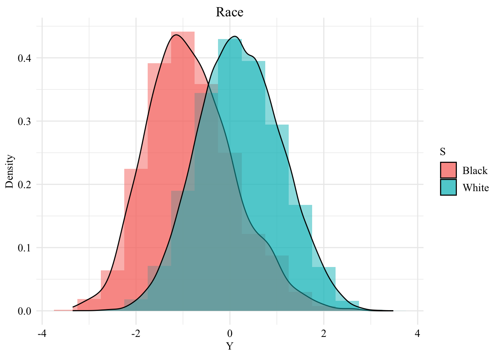
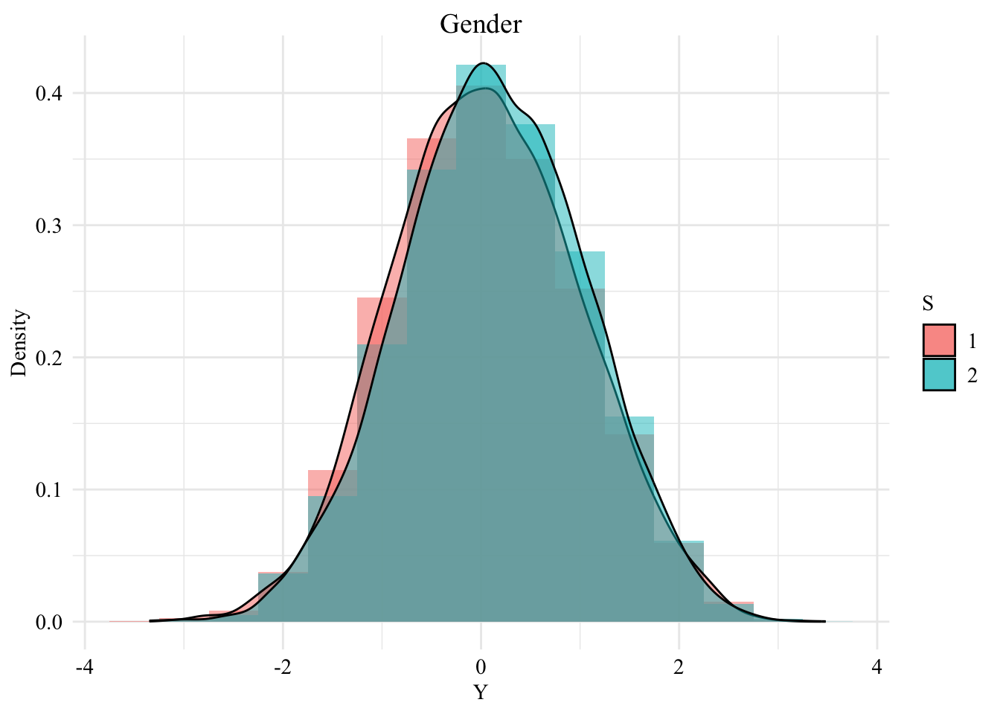
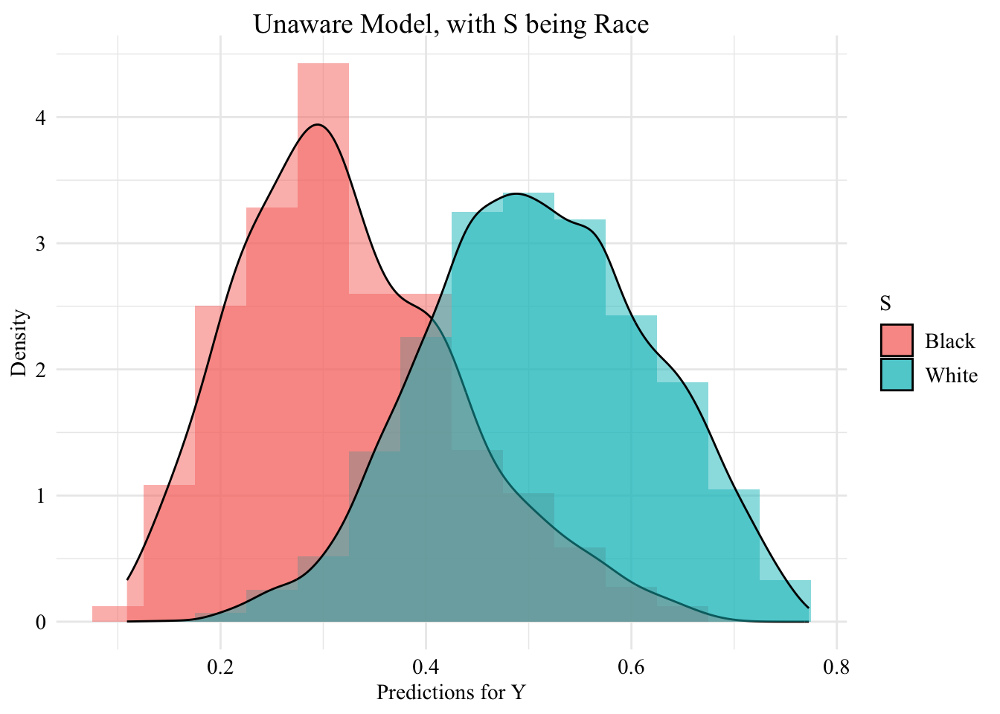
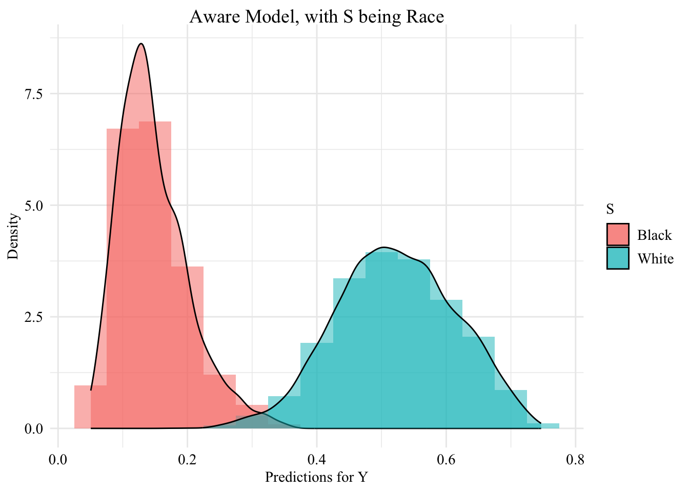
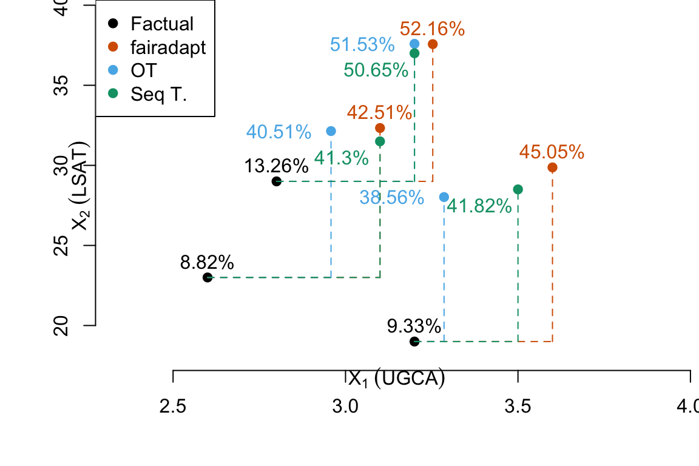

This law school dataset contains information collected through a survey conducted from 1991 through 1997 by the Law School Admission Council across 163 law schools in the United States of America (Wightman (1998)). In total, 21,790 law students were tracked through law school, graduation, and sittings for bar exams.
Each row from the raw data gives information for a student. The following characteristics are available:
race: Race of the student (character: Amerindian, Asian, Black, Hispanic, Mexican, Other, Puertorican, White).
sex: Sex of the student (numeric: 1 female, 2 male).
LSAT: LSAT score received by the student (numeric).
UGPA: Undergraduate GPA of the student (numeric).
region_first: region in which the student took their first bar examination (Far West, Great Lakes, Midsouth, Midwest, Mountain West, Northeast, New England, Northwest, South Central, South East) (character)
ZFYA: standardized first-year law school grades (first year average grade, FYA) (numeric).
sander_index: Sander index of the student: weighted average of normalized UGPA and LSAT scores (however, no details are given for this specific dataset, see Sander (2004), p. 393) (numeric)
first_pf: Probably a binary variable that indicates whether the student passed on their first trial ? No information is given about this variable… (numeric 0/1).
Then, we focus on a subset of variables of interest:
df <- df |>select( race, sex, # we can take S = gender LSAT, # or S = race (white/black) UGPA, ZFYA # Y )
We create a dataset where the only protected class is the race:
# Table for S = racedf_race <- df |>select( race, UGPA, LSAT, ZFYA ) |>filter( race %in%c("White", "Black") ) |>rename(S = race,X1 = UGPA,X2 = LSAT,Y = ZFYA ) |># no NA valuesmutate(S =as.factor(S) )
And another dataset in which the only protected class is the sex:
# Table for S = genderdf_gender <- df |>select( sex, UGPA, LSAT, ZFYA ) |>rename(S = sex,X1 = UGPA,X2 = LSAT,Y = ZFYA ) |># no NA valuesmutate(S =as.factor(S) )
1.1.1 S = Race
ggplot(data = df_race, mapping =aes(x = Y, fill = S)) +geom_histogram(mapping =aes(y = ..density..), alpha =0.5, position ="identity", binwidth =0.5 ) +geom_density(alpha =0.5) +labs(title ="Race",x ="Y",y ="Density" ) +global_theme()
Figure 1.1: Distribution of the standardized first-year law school grades among the two groups, when \(S\) is the race

1.1.2 S = Gender
ggplot(data = df_gender, mapping =aes(x = Y, fill = S)) +geom_histogram(mapping =aes(y = ..density..), alpha =0.5, position ="identity", binwidth =0.5 ) +geom_density(alpha =0.5) +labs(title ="Gender",x ="Y",y ="Density" ) +global_theme()
Figure 1.2: Distribution of the standardized first-year law school grades among the two groups, when \(S\) is the gender

1.2 Causal graph
The assumed causal graph we use here is different from that of the different papers De Lara et al. (2024), Kusner et al. (2017), Black, Yeom, and Fredrikson (2020) using the same dataset.
We make the following assumptions:
The sensitive attribute, (S) (race), has no parents.
The two other explanatory variables, (X_1) (UGPA) and (X_2) (LSAT), both directly depend on the sensitive attribute.
The second variable, (X_2) (LSAT), also depends on the first variable, (X_1) (UGPA). This is done for illustrative purposes, assuming that the score obtained on the LSAT is influenced by the UGPA.
The two variables, (X_1) (UGPA) and (X_2) (LSAT), cause the target variable (Y), i.e., whether the student obtained a high standardized first-year average (ZFYA).
The corresponding Structural Equation Model writes:
\[
\begin{cases}
S: \text{ sensitive attribute (race)} \\
X_1 = h_1(S, U_1): \text{ UGPA, dependent on } S \\
X_2 = h_2(S, X_1, U_2): \text{ LSAT, dependent on } S \text{ and } X_1 \\
Y = h_3(X_1, X_2, U_Y): \text{ ZFYA, dependent on } X_1 \text{ and } X_2 \\
\end{cases}
\]
where (U_1), (U_2), and (U_Y) are independent error terms.
In R, we construct the upper triangular adjacency matrix to reflect our assumed causal structure:
Following Kusner et al. (2017), a logistic regression model is trained. To convert (Y) into a categorical variable, the median is used as a threshold, in line with Black, Yeom, and Fredrikson (2020). The race, denoted as the sensitive attribute (S), has two categories: White and Black. The dataset is divided into training and testing sets. The classifier is first trained and used to compute the necessary quantities for counterfactual inference on the training set. Subsequently, the trained classifier is applied to the test set to make predictions and perform counterfactual analyses. The results of the counterfactuals will also be evaluated on the training set due to the limitation that Optimal Transport in the multivariate case cannot be computed for new samples, unlike the methodologies used in FairAdapt (Plečko, Bennett, and Meinshausen (2021)) and the approach developed in this paper.
First, we transform \(Y\) into a binary variable:
med <-median(df_race$Y)df_race_c <- df_race |>mutate(Y_c =ifelse(Y > med, 1, 0) ) |>select(S, X1, X2, Y = Y_c)
unaware logistic regression classifier: model without including the sensitive attribute.
aware logistic regression classifier: model with the sensitive attribute included in the set of features.
The model is trained using the log_reg_train() function defined in functions/utils.R:
log_reg_train
function (train_data, test_data, type = c("aware", "unaware"))
{
if (type == "unaware") {
train_data_ <- train_data %>% select(-S)
test_data_ <- test_data %>% select(-S)
}
else {
train_data_ <- train_data
test_data_ <- test_data
}
model <- glm(Y ~ ., data = train_data_, family = binomial)
pred_train <- predict(model, newdata = train_data_, type = "response")
pred_test <- predict(model, newdata = test_data_, type = "response")
list(model = model, pred_train = pred_train, pred_test = pred_test)
}
Let us train the two models. Then, we extract the predicted values on both the train set and the test set.
# Unaware logistic regression classifier (model without S)pred_unaware <-log_reg_train(data_train, data_test, type ="unaware")pred_unaware_train <- pred_unaware$pred_trainpred_unaware_test <- pred_unaware$pred_test# Aware logistic regression classifier (model with S)pred_aware <-log_reg_train(data_train, data_test, type ="aware")pred_aware_train <- pred_aware$pred_trainpred_aware_test <- pred_aware$pred_test
We create a table for each model, with the sensitive attribute and the predicted value by the model (()), only for observations from the test set.
df_test_unaware <-tibble(S = data_test$S, pred = pred_unaware_test)df_test_aware <-tibble(S = data_test$S, pred = pred_aware_test)
1.3.1 Unaware
ggplot(data = df_test_unaware, mapping =aes(x = pred, fill = S)) +geom_histogram(mapping =aes(y = ..density..), alpha =0.5, position ="identity", binwidth =0.05 ) +geom_density(alpha =0.5) +labs(title ="Unaware Model, with S being Race",x ="Predictions for Y",y ="Density" ) +global_theme()
Figure 1.4: Density of predictions on the test set, for the unaware model, when the sensitive attribute is the race

1.3.2 Aware
ggplot(data = df_test_aware,mapping =aes(x = pred, fill = S)) +geom_histogram(mapping =aes(y = ..density..), alpha =0.5, position ="identity", binwidth =0.05 ) +geom_density(alpha =0.5) +labs(title ="Aware Model, with S being Race",x ="Predictions for Y",y ="Density" ) +global_theme()
Figure 1.5: Density of predictions on the test set, for the aware model, when the sensitive attribute is the race

1.4 Counterfactual inference
Let us now turn to counterfactual inference. We will use three methods:
Fairadapt
Multivariate optimal transport
Sequential transport (the methodology we develop in the paper).
1.4.1 Fairadapt
We adapt the code from Plečko, Bennett, and Meinshausen (2021) to handle the test set. This avoids estimating cumulative distribution and quantile functions on the test set, which would otherwise necessitate recalculating quantile regression functions for each new sample.
We do not need to adapt Y here, so we need to remove it from the adjacency matrix:
adj_wo_Y <- adj[-4,-4]adj_wo_Y
S X1 X2
S 0 1 1
X1 0 0 1
X2 0 0 0
We create a dataset with the sensitive attribute and the two other predictors:
df_race_fpt <- df_race_c |>select(S, X1, X2)
Let us have a look at the levels of our sensitive variable:
levels(df_race_fpt$S)
[1] "Black" "White"
The reference class here consists of Black individuals.
Two configurations will be considered in turn:
The reference class consists of Black individuals, and FairAdapt will be used to obtain the counterfactual UGPA and LSAT scores for White individuals as if they had been Black.
The reference class consists of White individuals, and FairAdapt will be used to obtain the counterfactual UGPA and LSAT scores for Black individuals as if they had been White.
Let us build a dataset containing only counterfactual characteristics (obtained with fairadapt): values for \(X_1\) and \(X_2\) of White individuals as if they had been Black, and values for \(X_1\) and \(X_2\) of Black individuals as if they had been White.
We merge the two datasets, factuals_unaware and counterfactuals_unaware_fpt in a single one. We add a column, type, to state whether the row gives the initial observations and predictions or the counterfactuals and correspoonding predictions.
# dataset with factuals, for unaware modelfactuals_unaware <- factuals_unaware |>mutate(type ="factual")# dataset with counterfactuals, for unaware modelcounterfactuals_unaware_fpt <- counterfactuals_unaware_fpt |>mutate(type ="counterfactual")# Bind the two:unaware_fpt <-bind_rows(factuals_unaware, counterfactuals_unaware_fpt)
Now, we can visualize the distribution of the values predicted by the unaware model within each group defined by the sensitive attribute.
Recall we created an object called df_counterfactuals_fpt which contains the counterfactual characteristics of all students, obtained with fairadapt:
df_counterfactuals_fpt
# A tibble: 19,567 × 3
S X1 X2
<fct> <dbl> <dbl>
1 Black 2.7 31.3
2 Black 2.6 28
3 Black 2.7 21
4 Black 3.1 28.1
5 Black 3.3 21.0
6 Black 3.3 26.9
7 Black 2.4 29.6
8 Black 2.3 29.8
9 Black 3.3 21
10 Black 2.85 33.5
# ℹ 19,557 more rows
We make predictions with the aware model on these counterfactuals:
pred_aware_fpt <-predict( model_aware, newdata = df_counterfactuals_fpt, type ="response")
Then, we create a table with the counterfactuals and the predicted value by the aware model:
Lastly, we can visualize the distribution of predicted values by the aware model once the characteristics of the individuals who are not on the reference group have been modified using fairadapt.
# A tibble: 2 × 5
S X1 X2 pred type
<fct> <dbl> <dbl> <dbl> <chr>
1 Black 2.8 29 0.300 factual
2 White 2.8 34 0.382 factual
The characteristics of these two individuals would be, according to what was estimated using fairadapt, if the reference group was the one in which they do not belong:
Let us assume here that the reference group is “White individuals” (i.e., the group with the most individuals in the dataset). We focus on the minority, i.e., Black individuals. We consider here that the model is fair towards the minority class if: \[
P(\hat{Y}_{S \leftarrow \text{White}} = 1 | S = \text{Black}, X_1, X_2) = P(\hat{Y} = 1 | S = \text{White}, X_1, X_2)
\] If the model is fair with respect to this criterion, the proportion of Black individuals predicted to have grades above the median should be the same as if they had been white.
We apply multivariate optimal transport (OT), following the methodology developed in De Lara et al. (2024). Note that with OT, it is not possible to handle new cases. Counterfactuals will only be calculated on the train set.
The codes are run in python. We use the {reticulate} R package to call python in this notebook.
library(reticulate)
Some libraries need to be loaded (including POT called ot)
import otimport pandas as pdimport numpy as npimport matplotlib.pyplot as plimport ot.plot
Let us make prediction with the unaware model on the counterfactuals obtained with OT:
pred_unaware_ot <-predict( model_unaware, newdata = counterfactuals_ot, type ="response")counterfactuals_unaware_ot <- counterfactuals_ot |>mutate(pred = pred_unaware_ot, type ="counterfactual")
We bind the factuals and counterfactuals with their respective predicted values in a single dataset:
unaware_ot <-bind_rows(# predicted values on factuals factuals_unaware, # predicted values on counterfactuals obtained with OT counterfactuals_unaware_ot)
Then, we can visualize the distribution of the values predicted by the unaware model within each group defined by the sensitive attribute.
# A tibble: 4 × 6
S X1 X2 pred type id
<fct> <dbl> <dbl> <dbl> <chr> <dbl>
1 Black 2.8 29 0.300 factual 24
2 White 2.8 34 0.382 factual 25
3 White 3.20 37.6 0.502 counterfactual 24
4 Black 2.4 25 0.203 counterfactual 25
We compute the difference between the predicted value by the unaware model using the counterfactuals and the predicted value by the unaware model using the factuals:
As for the counterfactuals obtained with fairadapt, we assume here that the reference group is “White individuals” (i.e., the group with the most individuals in the dataset). We focus on the minority, i.e., Black individuals. We consider here that the model is fair towards the minority class if: \[
P(\hat{Y}_{S \leftarrow \text{White}} = 1 | S = \text{Black}, X_1, X_2) = P(\hat{Y} = 1 | S = \text{White}, X_1, X_2)
\] If the model is fair with respect to this criterion, the proportion of Black individuals predicted to have grades above the median should be the same as if they had been white.
Lastly, we turn to sequential transport (the methodology developed in our paper). We define a function, fonction_transport() (see in functions/utils.R) to perform a fast sequential transport on causal graph.
#' Sequential transport#'#' @param data dataset with three columns:#' - S: sensitive attribute, factor White/Black#' - X1: first predictor, assumed to be causally linked to S#' - X2: second predictor, assumed to be causally linked to S and X1#' @param number of cells in each dimension (default to 15)#' @param h small value added to extend the area covered by the grid (default#' to .2)#' @param d neighborhood weight when conditioning by x1 (default to .5)fonction_transport <-function(data,n_grid =15,h = .2,d = .5) {# Subset of the data: 0 for Black, 1 for White D_SXY_0 <- data[data$S =="Black", ] D_SXY_1 <- data[data$S =="White", ]# Coordinates of the cells of the grid on subset of 0 (Black) vx1_0 <-seq(min(D_SXY_0$X1) - h, max(D_SXY_0$X1) + h, length = n_grid +1) vx2_0 <-seq(min(D_SXY_0$X2) - h, max(D_SXY_0$X2) + h, length = n_grid +1)# and middle point of the cells vx1_0_mid <- (vx1_0[2:(1+n_grid)]+vx1_0[1:(n_grid)]) /2 vx2_0_mid <- (vx2_0[2:(1+n_grid)]+vx2_0[1:(n_grid)]) /2# Coordinates of the cells of the grid on subset of 1 (White) vx1_1 <-seq(min(D_SXY_1$X1) -h, max(D_SXY_1$X1) + h, length = n_grid +1) vx1_1_mid <- (vx1_1[2:(1+ n_grid)] + vx1_1[1:(n_grid)]) /2# and middle point of the cells vx2_1 <-seq(min(D_SXY_1$X2) - h, max(D_SXY_1$X2) + h, length = n_grid +1) vx2_1_mid <- (vx2_1[2:(1+ n_grid)] + vx2_1[1:(n_grid)]) /2# Creation of the grids for the CDF and Quantile function# init with NA values# One grid for X1 and X2, on both subsets of the data (Black/White) F1_0 <- F2_0 <- F1_1 <- F2_1 <-matrix(NA, n_grid, n_grid) Q1_0 <- Q2_0 <- Q1_1 <- Q2_1 <-matrix(NA, n_grid, n_grid)# Empirical CDF for X1 on subset of Black FdR1_0 <-Vectorize(function(x) mean(D_SXY_0$X1 <= x)) f1_0 <-FdR1_0(vx1_0_mid)# Empirical CDF for X2 on subset of Black FdR2_0 <-Vectorize(function(x) mean(D_SXY_0$X2 <= x)) f2_0 <-FdR2_0(vx2_0_mid)# Empirical CDF for X1 on subset of White FdR1_1 <-Vectorize(function(x) mean(D_SXY_1$X1 <= x)) f1_1 <-FdR1_1(vx1_1_mid)# Empirical CDF for X2 on subset of White FdR2_1 <-Vectorize(function(x) mean(D_SXY_1$X2 <= x)) f2_1 <-FdR2_1(vx2_1_mid) u <- (1:n_grid) / (n_grid +1)# Empirical quantiles for X1 on subset of Black Qtl1_0 <-Vectorize(function(x) quantile(D_SXY_0$X1, x)) q1_0 <-Qtl1_0(u)# Empirical quantiles for X2 on subset of Black Qtl2_0 <-Vectorize(function(x) quantile(D_SXY_0$X2, x)) q2_0 <-Qtl2_0(u)# Empirical quantiles for X1 on subset of White Qtl1_1 <-Vectorize(function(x) quantile(D_SXY_1$X1, x)) q1_1 <-Qtl1_1(u)# Empirical quantiles for X2 on subset of White Qtl2_1 <-Vectorize(function(x) quantile(D_SXY_1$X2, x)) q2_1 <-Qtl2_1(u)for(i in1:n_grid) {# Subset of Black idx1_0 <-which(abs(D_SXY_0$X1 - vx1_0_mid[i]) < d) FdR2_0 <-Vectorize(function(x) mean(D_SXY_0$X2[idx1_0] <= x)) F2_0[, i] <-FdR2_0(vx2_0_mid) Qtl2_0 <-Vectorize(function(x) quantile(D_SXY_0$X2[idx1_0], x)) Q2_0[, i] <-Qtl2_0(u) idx2_0 <-which(abs(D_SXY_0$X2 - vx2_0_mid[i]) < d) FdR1_0 <-Vectorize(function(x) mean(D_SXY_0$X1[idx2_0] <= x)) F1_0[, i] <-FdR1_0(vx1_0_mid) Qtl1_0 <-Vectorize(function(x) quantile(D_SXY_0$X1[idx2_0], x)) Q1_0[, i] <-Qtl1_0(u)# Subset of White idx1_1 <-which(abs(D_SXY_1$X1 - vx1_1_mid[i]) < d) FdR2_1 <-Vectorize(function(x) mean(D_SXY_1$X2[idx1_1] <= x)) F2_1[, i] <-FdR2_1(vx2_1_mid) Qtl2_1 <-Vectorize(function(x) quantile(D_SXY_1$X2[idx1_1], x)) Q2_1[, i] <-Qtl2_1(u) idx2_1 <-which(abs(D_SXY_1$X2-vx2_1_mid[i])<d) FdR1_1 <-Vectorize(function(x) mean(D_SXY_1$X1[idx2_1] <= x)) F1_1[, i] <-FdR1_1(vx1_1_mid) Qtl1_1 <-Vectorize(function(x) quantile(D_SXY_1$X1[idx2_1], x)) Q1_1[, i] <-Qtl1_1(u) }# Transport for X2 T2 <-function(x2) { i <-which.min(abs(vx2_0_mid - x2)) p <- f2_0[i] i <-which.min(abs(u - p)) x2star <- q2_1[i] x2star }# Transport for X1 T1 <-function(x1) { i <-which.min(abs(vx1_0_mid - x1)) p <- f1_0[i] i <-which.min(abs(u - p)) x1star <- q1_1[i] x1star }# Transport for X2 conditional on X1 T2_cond_x1 <-function(x2, x1) { k0 <-which.min(abs(vx1_0_mid - x1)) k1 <-which.min(abs(vx1_1_mid -T1(x1))) i <-which.min(abs(vx2_0_mid - x2)) p <- F2_0[i, k0] i <-which.min(abs(u - p)) x2star <- Q2_1[i, k1] x2star }# Transport for X1 conditional on X2 T1_cond_x2 <-function(x1, x2) { k0 <-which.min(abs(vx2_0_mid - x2)) k1 <-which.min(abs(vx2_1_mid - x2)) i <-which.min(abs(vx1_0_mid - x1)) p <- F1_0[i, k0] i <-which.min(abs(u - p)) x1star <- Q1_1[i, k1] x1star }list(Transport_x1 = T1,Transport_x2 = T2,Transport_x1_cond_x2 = T1_cond_x2,Transport_x2_cond_x1 = T2_cond_x1 )}
Note
The fonction_transport() function returns not only the functions Transport_x1(), Transport_x2(), Transport_x1_cond_x2(), Transport_x2_cond_x1(), but also the useful values of the grid (e.g., vx1_0_mid defined in the environment of the function and used in the functions). Note that defining a global object named vx1_0_mid will not alter the object of the same name defined in the environment of fonction_transport(): R will call the vx1_0_mid from that environment and not the one that may be defined in the global environment.
Let us apply this function. Note that we use a grid of length 500 to fasten the computation of sequential transport (the estimation takes about 45 seconds on a standard computer).
We also do the same with the transport of \(X_2\) conditional on \(X_1\):
T_X2_c_X1 <- seq_functions$Transport_x2_cond_x1
Now, we can apply these functions to the subset of Black individuals to sequentially transport \(X_1\) (UGPA) and then \(X_2\) (LSAT) conditional on the transported value of \(X_1\):
The values of \(X_1\) and \(X_2\) for Black individuals:
x1_star <-map_dbl(a10, T_X1) # Transport X1 to group S=Whitex2_star <-map2_dbl(a20, a10, T_X2_c_X1) # Transport X2|X1 to group S=White
We build a dataset with the sensitive attribute of Black individuals changed to white, and their characteristics changed to their transported characteristics:
# A tibble: 3 × 5
S X1 X2 pred type
<fct> <dbl> <dbl> <dbl> <chr>
1 Black 2.8 29 0.300 factual
2 Black 3.2 19 0.206 factual
3 Black 2.6 23 0.198 factual
Their characteristics after sequential transport (and the predicted value with the unaware model):
# A tibble: 3 × 6
S X1 X2 id pred type
<chr> <dbl> <dbl> <int> <dbl> <chr>
1 White 3.2 37 24 0.491 counterfactual
2 White 3.5 28.5 40 0.381 counterfactual
3 White 3.1 31.5 51 0.379 counterfactual
# A tibble: 6 × 7
S X1 X2 pred type id_indiv_black id
<chr> <dbl> <dbl> <dbl> <chr> <int> <int>
1 Black 2.8 29 0.300 factual 1 NA
2 Black 3.2 19 0.206 factual 2 NA
3 Black 2.6 23 0.198 factual 3 NA
4 White 3.2 37 0.491 counterfactual 1 24
5 White 3.5 28.5 0.381 counterfactual 2 40
6 White 3.1 31.5 0.379 counterfactual 3 51
# A tibble: 3 × 6
S X1 X2 id pred type
<chr> <dbl> <dbl> <int> <dbl> <chr>
1 White 3.2 37 24 0.507 counterfactual
2 White 3.5 28.5 40 0.418 counterfactual
3 White 3.1 31.5 51 0.413 counterfactual
# A tibble: 6 × 7
S X1 X2 pred type id_indiv_black id
<chr> <dbl> <dbl> <dbl> <chr> <int> <int>
1 Black 2.8 29 0.133 factual 1 NA
2 Black 3.2 19 0.0933 factual 2 NA
3 Black 2.6 23 0.0882 factual 3 NA
4 White 3.2 37 0.507 counterfactual 1 24
5 White 3.5 28.5 0.418 counterfactual 2 40
6 White 3.1 31.5 0.413 counterfactual 3 51
Figure 1.20: Predictions by the aware model for three Black individuals.

Black, Emily, Samuel Yeom, and Matt Fredrikson. 2020. “Fliptest: Fairness Testing via Optimal Transport.” In Proceedings of the 2020 Conference on Fairness, Accountability, and Transparency, 111–21.
De Lara, Lucas, Alberto González-Sanz, Nicholas Asher, Laurent Risser, and Jean-Michel Loubes. 2024. “Transport-Based Counterfactual Models.”Journal of Machine Learning Research 25 (136): 1–59.
Kusner, Matt J, Joshua Loftus, Chris Russell, and Ricardo Silva. 2017. “Counterfactual Fairness.” In Advances in Neural Information Processing Systems 30, edited by I. Guyon, U. V. Luxburg, S. Bengio, H. Wallach, R. Fergus, S. Vishwanathan, and R. Garnett, 4066–76. NIPS.
Lara, Lucas de, Alberto González-Sanz, Nicholas Asher, and Jean-Michel Loubes. 2021. “Transport-Based Counterfactual Models.”arXiv 2108.13025.
Plečko, Drago, Nicolas Bennett, and Nicolai Meinshausen. 2021. “Fairadapt: Causal Reasoning for Fair Data Pre-Processing.”arXiv Preprint arXiv:2110.10200.
Sander, Richard H. 2004. “A Systemic Analysis of Affirmative Action in American Law Schools.”Stan. L. Rev. 57: 367.